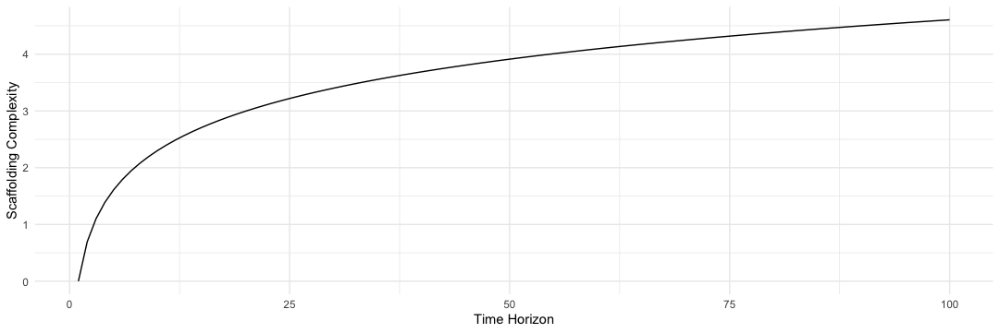

Types of Projects
The term Python project can be somewhat misleading. While languages like Swift are designed for specific purposes such as generating macOS/iOS apps, components, and frameworks, Python is used in a much more versatile manner. A Python project might range from an analytical solution developed across multiple Jupyter notebooks to a standalone script querying a database API and extracting results to an application or package facilitating the deployment of models. Each of these projects has its own key usability requirements. For instance, if end-users will utilize our project through a command-line interface, we will focus on argument parsing and other elements facilitating user-friendly execution.
Time Horizon
The time horizon approach to project structure is hugely beneficial as it enables us to narrow down the gap between the complexity of the project scaffolding and the time horizon. If visualized, it might look something like this:


Complexity and scaffolding structure
Set-up
File structure
While in certain scenarios we may get away with a single-file setup, any wider collaboration is usually easier if the project structure spans multiple files.
Testing
When structuring Python projects, it’s essential to understand the difference between setup.py and setup.cfg, as both are used for packaging and distribution but serve slightly different purposes.
setup.py
setup.py is a Python script traditionally used for configuring a Python package. It contains a setup() function from the setuptools module, which defines the metadata and dependencies of the project.
Pros:
- Flexibility: Being a Python script,
setup.py allows for complex logic to determine the package’s configuration.
- Wide Usage: It has been the standard for many years, meaning it is widely supported and understood within the Python community.
- Dynamic Configuration: You can dynamically set values, run additional code, or perform custom setup steps.
Cons:
- Readability: Because it can contain arbitrary code, it might be harder to read and understand compared to a static configuration file.
- Complexity: For simple projects, the added flexibility might be overkill and lead to unnecessary complexity.
Example of setup.py:
from setuptools import setup, find_packages
setup(
name='example_package',
version='0.1',
packages=find_packages(),
install_requires=[
'numpy',
'pandas'
],
)
setup.cfg
setup.cfg is an INI file used to configure a Python package. It serves the same purpose as setup.py but in a declarative manner. This means you can specify the metadata and dependencies of the project in a static, easy-to-read format.
Pros:
- Readability: The INI format is more readable and easier to understand, especially for those who are not familiar with Python.
- Simplicity: For many projects, especially simpler ones,
setup.cfg provides all the needed configuration without the complexity of a script.
- Separation of Concerns: Keeps configuration separate from code, adhering to the principle of separating configuration from the implementation.
Cons:
- Limited Flexibility: Being a static file, it cannot perform dynamic operations or complex logic.
- Less Dynamic: If you need to compute values or execute code during setup,
setup.cfg cannot handle these scenarios.
Example of setup.cfg:
[metadata]
name = example_package
version = 0.1
[options]
packages = find:
install_requires =
numpy
pandas
Summary
Structuring Python projects effectively requires understanding the different types of projects and their unique needs. Whether it’s a data science project, a model, a tool, or a hybrid, each has its own requirements for usability and collaboration. The choice between using setup.py and setup.cfg for project configuration also plays a significant role. While setup.py offers flexibility and dynamic configuration through Python scripting, setup.cfg provides a more readable, simpler, and declarative approach. Each option has its pros and cons, and the right choice depends on the specific needs and complexity of the project. By carefully considering these factors, you can ensure your Python projects are well-organized, maintainable, and easy to collaborate on.